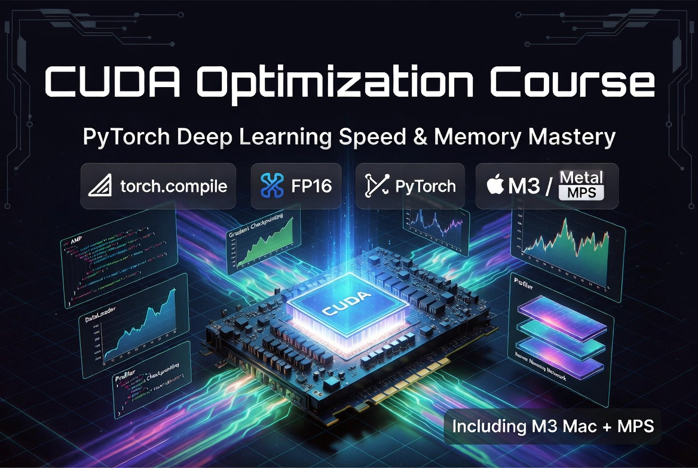
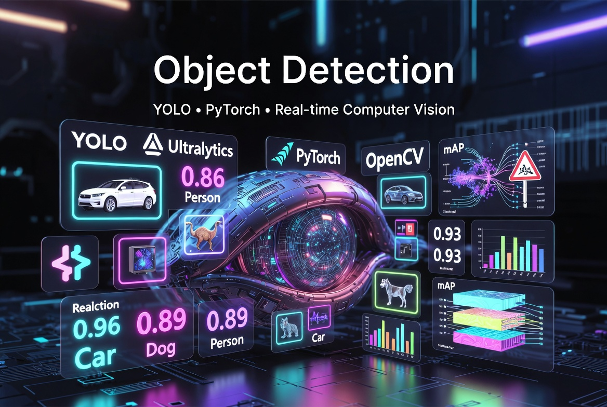
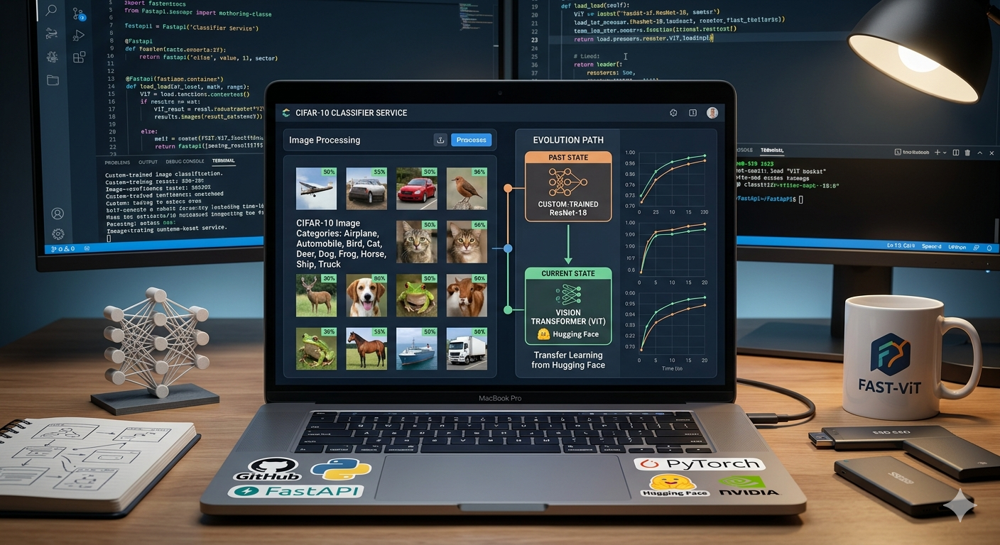
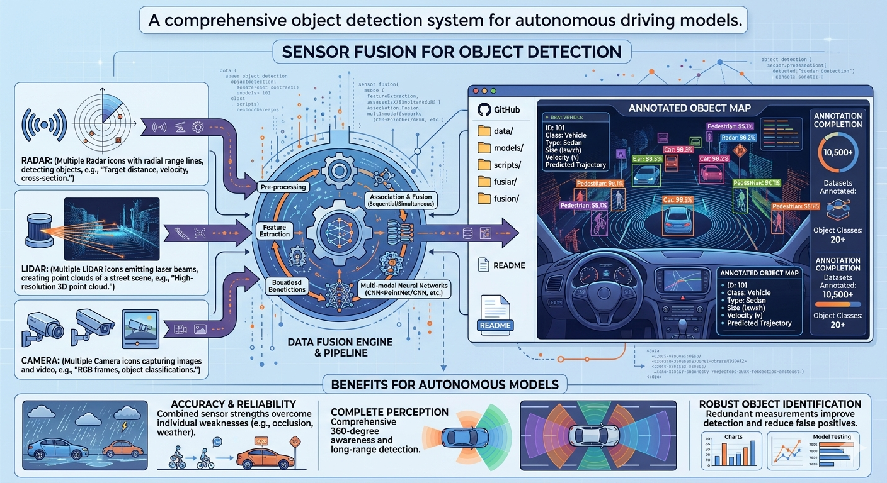
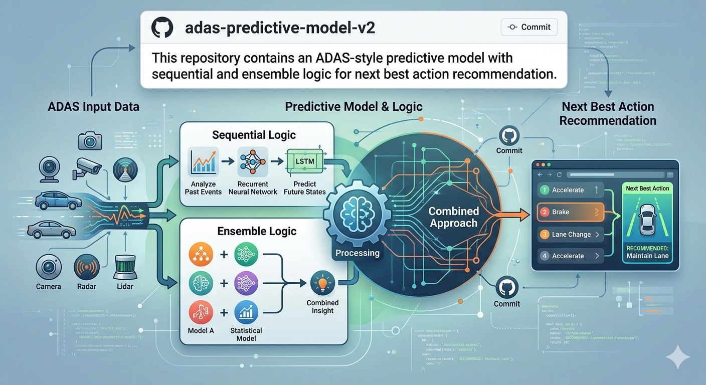
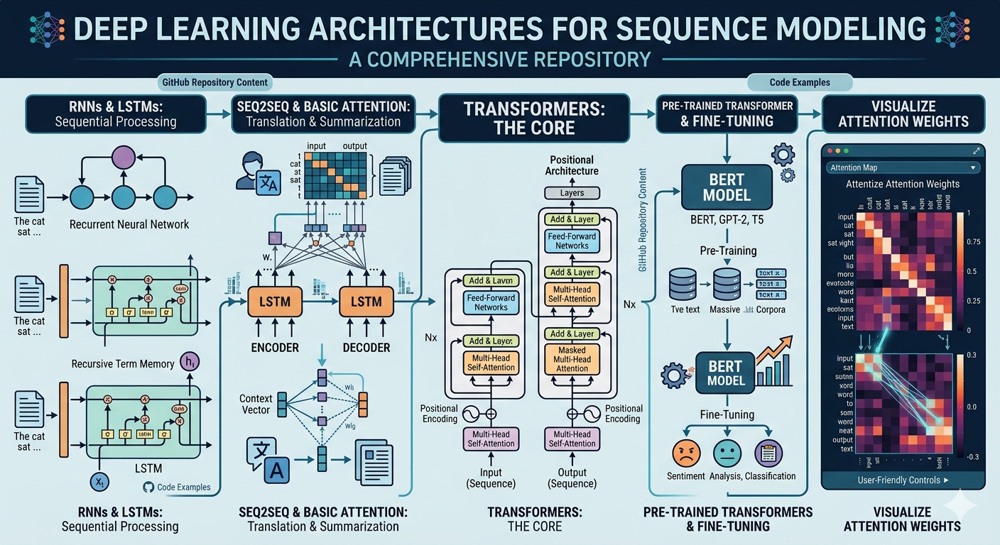
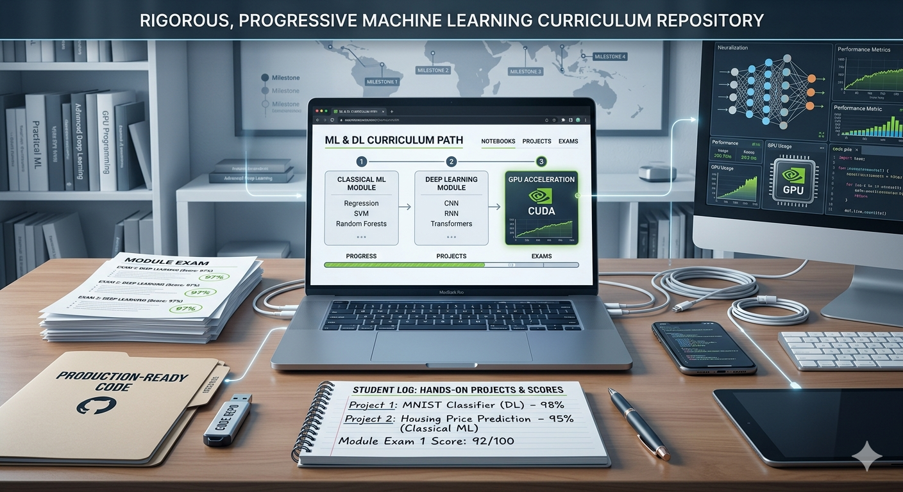
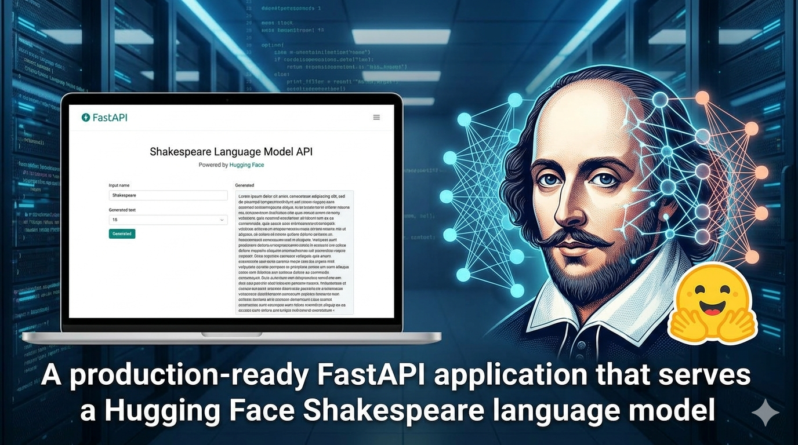
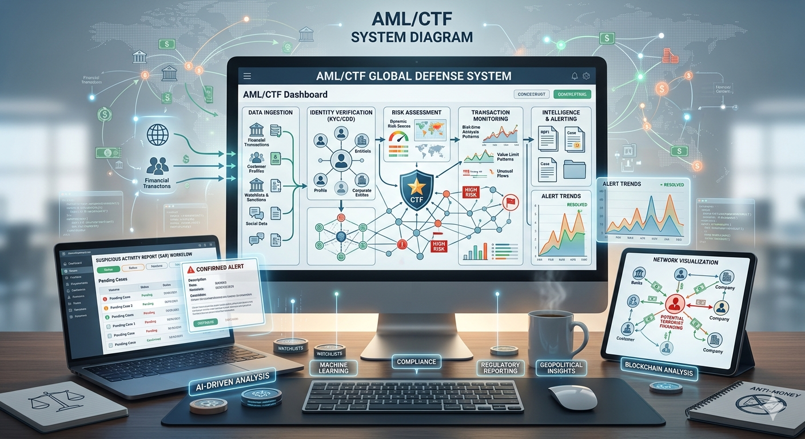

Machine Learning Engineer & MLOps Specialist
Experienced Python developer specializing in building scalable machine learning systems, MLOps pipelines, and full-stack applications using PyTorch, FastAPI, Docker, and cloud technologies.
Results-driven Machine Learning Engineer and Python developer with over 6 years of experience building end-to-end machine learning solutions, MLOps pipelines, and scalable web applications.
Currently at Torc Robotics, I work with large-scale LiDAR and camera data to improve autonomous truck perception systems. In parallel, I develop production-grade ML pipelines using PyTorch, FastAPI, Docker, and modern deployment strategies.
My expertise spans model development, performance optimization, API development, and deploying reliable systems from experimentation to production.

Achieved 2–4× speedups and ~60% memory reduction on Apple M3 hardware using mixed precision, torch.compile, and gradient checkpointing.
View Repository →A conversational AI assistant built with Python and machine learning, designed to provide seamless user interactions and intelligent responses.
View Repository →
Developed a real-time object detection system using YOLOv8 and PyTorch, achieving high accuracy and efficiency in various environments.
View Repository →
A high-performance FastAPI service that classifies images into the 10 CIFAR-10 categories. This project evolved from a custom-trained ResNet-18 to a Vision Transformer (ViT) using Transfer Learning from Hugging Face.
View Repository →A production-ready FastAPI REST API with PostgreSQL, Docker, and GitHub Actions.
View Repository →
A comprehensive object detection system that fuses data from multiple sensors (Radar, LiDAR, and Camera) to detect and annotate objects for autonomous driving models.
View Repository →
This repository contains an ADAS-style predictive model with sequential and ensemble logic for next best action recommendation.
View Repository →
The evolution of Attention: RNNs, LSTMs, and Transformers. Implementations, fine-tuning, and visual attention mapping.
View Repository →
A collection of fundamental concepts and implementations in machine learning and deep learning.
View Repository →
A production-ready FastAPI application that serves a Hugging Face Shakespeare language model
View Repository →A high-performance FastAPI service that classifies images into the 10 CIFAR-10 categories(v2.0).
View Repository →This project containerizes a FastAPI application with BERT (DistilBERT) model inference using Docker. The application provides sentiment analysis capabilities through REST API endpoints.
View Repository →
This project implements a comprehensive machine learning system for detecting suspicious financial transactions related to money laundering and terrorist financing. The system uses advanced data analysis techniques and multiple ML models to identify high-risk transactions and patterns.
View Repository →Open to new opportunities in MLOps, Machine Learning Engineering, and Python Backend Development.
hamidmatiny@gmail.com